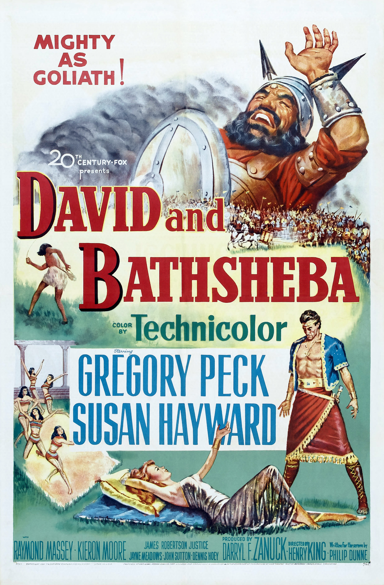

David and Bathsheba
24th Academy Awards
(Oscars 1952)
5 Nominations, 0 Awards
| Nominations | ||
|---|---|---|
| Category | Nominees | Result |
| Writing (Story and Screenplay) | Philip Dunne | Nominated |
| Cinematography (Color) | Leon Shamroy | Nominated |
| Art Direction (Color) | George Davis, Lyle Wheeler, Paul S. Fox, and Thomas Little | Nominated |
| Costume Design (Color) | Charles LeMaire and Edward Stevenson | Nominated |
| Music (Music Score of a Dramatic or Comedy Picture) | Alfred Newman | Nominated |